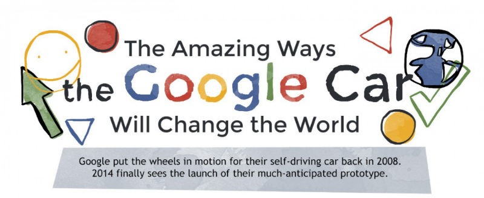

Funcionament

El cotxe de Google utilitza una sèrie de sensors i càmeres repartits per tot el cotxe per poder verue i reconèixer el medi que l'envolta i saber com reaccionar. Les càmeres són capaces de reconèixer les senyals de trànsit, i els altres cotxes que estiguin a la carretera.
El cotxe està directament connectat als serveis de Google com el Maps o el sistema de trànsit o les rutes de totes les ciutats. Si no reconeix alguna ruta o carretera el cotxe es para i canvia a condcció manual.
(Clic a la imatge per fer-la més gran)